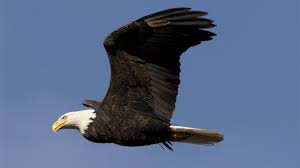

Breat code Photo Fedd
MY Firts Photo
1/3
El gato doméstico, llamado popularmente gato, y de forma coloquial minino, michino, michi, micho, mizo, miz, morroño o morrongo, entre otros nombres, es un mamífero carnívoro de la familia Felidae. Es una subespecie domesticada por la convivencia con el ser humano. Wikipedia
MY second Photo
2/3

Águila es el nombre dado a las aves de presa, del orden de Accipitriformes, , familia Accipitridae, subfamilia Buteoninae. Pertenecen a varios géneros, los cuales están sujetos a una reclasificación más adecuada puesto que los expertos no llegan a una opinión consensuada. Wikipedia
MY Third Photo
3/3
El perro, llamado perro doméstico o can, y en algunos lugares coloquialmente llamado chucho, tuso, choco, entre otros; es un mamífero carnívoro de la familia de los cánidos, que constituye una especie del género Canis. Wikipedia